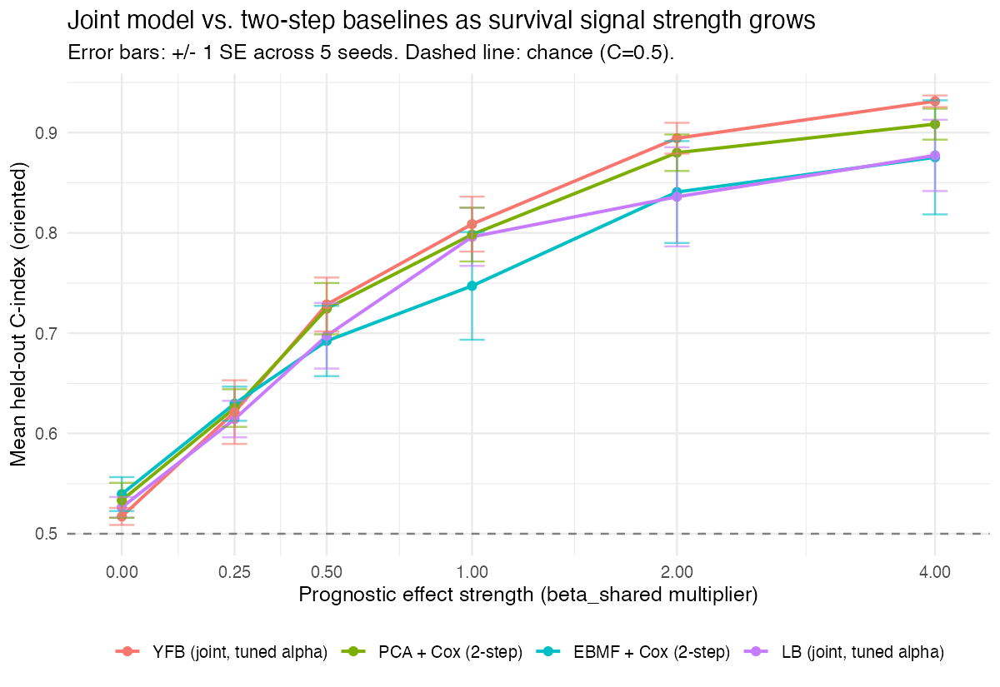

SSBMF Progress Report: Model Refinement, Validation, and Biological Interpretation
Work completed since the 6/18/2026 lab meeting
Executive summary
The model configuration recommended at the 6/18/2026 lab meeting has not changed: YFB (\(\eta = (YF)\hat\beta\)), DeSurv-aligned gene selection, \(K=7\), no cohort indicator. What changed since then is that its headline numbers were corrected, and its \(K=7\) choice was independently stress-tested from several directions that all converge on the same answer.
- Mean external C-index across 5 held-out PDAC cohorts: 0.627 (SE \(\approx\) 0.020 across cohorts; corrected from an earlier 0.636 figure — the decline is attributable entirely to a train/test preprocessing bug fix, not to a regression in the model; §2).
- The model uses only 2 of its 7 factors for survival prediction (\(K_{\text{eff}}=2\)), and this is now a well-supported result, not a tuning artifact — two independent optimization strategies (warm-start from a higher-\(K\) fit, and a joint \((K,\alpha)\) Bayesian-optimization search) both land on \(K_{\text{eff}}=2\), and a deflation-initialization test analytically ruled out initialization as the cause of the earlier ambiguity (§4). \(K=7\) is kept as the practical default for one-step reproducibility; \(K=4\) or \(K=5\) are validated, statistically equivalent, more-parsimonious alternatives.
- The two survival-active gene programs have a confirmed biological identity: an adverse, basal-like/squamous/MET-EGFR-driven program (Program 7) and a protective, classical/ differentiated-epithelial program (Program 3) — the established PDAC subtype-survival axis, independently recovered by five separate lines of evidence (§6).
- The joint model matches a two-step (unsupervised factorization then Cox) baseline when there is no survival signal, and is more accurate and more stable when there is — its advantage grows with signal strength in the realistic regimes tested, with one understood, reported exception under an unrealistic synthetic design (§3).
- A study-specific baseline hazard option is now available (stratified Cox partial likelihood) and is performance-neutral on the recommended configuration, so it remains off by default (§5).
This report also states plainly what the method’s value proposition is and is not (§8): SBMF is best understood as the Bayesian counterpart to the lab’s existing DeSurv method, not (yet) a demonstrated improvement over it on a matched, head-to-head protocol.
1. Model overview
The method fits a supervised Bayesian matrix factorization to a training cohort’s gene-expression matrix \(\mathbf{Y}\) (\(n\) patients \(\times\) \(p\) genes) jointly with a Cox proportional-hazards model on patient survival, coupling the two through a shared low-rank factor structure. Two parameterizations of the survival linear predictor were implemented and compared:
- LB (\(\eta = \mathbf{L}\hat\beta\)): survival risk is a linear function of each patient’s posterior-mean factor loadings \(\mathbf{L}\), the same loadings the genomics likelihood fits.
- YFB (\(\eta = (\mathbf{YF})\hat\beta\), “Cox-on-\(YF\)”): survival risk is a linear function of the patient’s observed expression projected onto the learned factors (\(\mathbf{Y}\mathbf{F}\)), computed identically at training and prediction time.
YFB is the recommended parameterization. LB has a structural train/test mismatch: at training time \(\mathbf{L}\) is an EBNM-shrunk posterior mean, but at prediction time on a new patient it must be reconstructed by projection, which is a different quantity. YFB uses the same \((\mathbf{YF})\) projection at both stages by construction, so there is no such mismatch. YFB’s genomics factor matrix \(\mathbf{L}\) is fit from genomics data alone (no survival term touches it or \(\mathbf{F}\) by default), and \(\hat\beta\) is fit purely on the survival side — the two halves of the model never compete for the same coordinate, which turns out to matter for how safely the two objectives can be rebalanced (§2). A sensitivity check refitting the LB parameterization on the identical DeSurv gene set and \(K=7\) gives mean external C = 0.611 (vs. YFB’s 0.627) and recovers the same two-program adverse/protective structure — confirming the finding is not an artifact specific to the YFB formulation, while still supporting YFB as the primary recommendation.
New-patient scoring is exact under YFB: \(\eta_{\text{new}} = \mathbf{Y}_{\text{new}}\mathbf{F}\hat\beta\), no approximation or re-fitting required.
2. Putting the objective on a principled footing
The lab’s 6/18 feedback noted a real issue: the genomics likelihood term is \(O(np)\) in aggregate while the survival (Cox partial likelihood) term is \(O(n)\) — an unnormalized, roughly \(p\)-fold scale gap that makes the mixing weight \(\alpha\) in \((1-\alpha)\cdot\text{genomics} + \alpha\cdot\text{survival}\) uninterpretable (an \(\alpha=0.5\) does not mean “balanced” when one side starts \(p\times\) larger).
What was tried, and what actually helped. Shrinking the genomics term’s precision destabilized LB’s factor updates (\(\mathbf{L}\) and \(\mathbf{F}\) co-adapt bilinearly, and reducing either side’s precision removed the numerical margin the model relied on, collapsing both to exactly zero within a few iterations). Boosting the survival term’s precision at the \(\mathbf{L}\)-update site caused unbounded divergence in a separate synthetic scenario. The design that shipped decouples the two update sites: the rebalancing is applied only where it cannot create bilinear feedback — the ELBO monitor and \(\hat\beta\)’s own update — while \(\mathbf{L}\) and \(\mathbf{F}\)’s CAVI updates are left untouched in both models.
Honest finding: this provided no performance benefit for YFB. In YFB’s factorization, \(\mathbf{L}\) is pure-genomics and \(\hat\beta\) is pure-survival — the two never share a coordinate that needs rebalancing in the first place, so there was no real imbalance to fix for this parameterization. An initial implementation detail (boosting \(\hat\beta\)’s own EBNM precision by a factor of \(p\), boost_beta=TRUE) was found to be an unjustified side effect: it reduced EBNM shrinkage on \(\hat\beta\) without correcting any genuine imbalance, inflating the apparent number of survival-active factors from \(K_{\text{eff}}=2\) to \(4\) and the external C-index from 0.636 to 0.642. Neither move reflected a real gain — with the corrected default (boost_beta=FALSE), \(\hat\beta\)’s values are essentially unchanged from before this work (previously \(+0.011/-0.041\) for the two active factors, now \(+0.0115/-0.0404\)), and \(K_{\text{eff}}\) returns to 2. This limitation does not apply to LB the same way — LB’s \(\mathbf{L}\)-update genuinely does mix genomics and survival terms in one formula — but no stable per-coordinate fix for LB was found; this is documented as a known, deferred limitation that does not affect the recommended (YFB) configuration.
The redundant lambda mixing parameter was retired. alpha already plays the role a second survival-scale multiplier would; lambda was a no-op in every production configuration and is not analogous to DeSurv’s own elastic-net penalty (a different regularization role this model already fills via its empirical-Bayes priors). Removing it was a pure simplification with zero effect on any fitted result.
The remaining, real correction: a train/test preprocessing mismatch. External validation cohorts were being rank-transformed while training used per-platform z-standardization — the reverse convention. Fixing this (so external cohorts are preprocessed identically to training) is the entire explanation for the 0.636 \(\rightarrow\) 0.627 change in the recommended configuration’s external C-index. This is a genuine correction, kept regardless of its small effect on this one metric — the prior number was simply computed on inconsistently preprocessed data.
Net effect on the recommended configuration: mean external C = 0.627, \(K=7\), \(K_{\text{eff}}=2\) — identical scientific conclusion to before this work, on a now-correctly-computed number.
3. Simulation validation: value over a two-step baseline
A natural question for any supervised factorization method: does jointly fitting the factors and the survival model do better than fitting factors first (unsupervised) and a Cox model second? Two complementary simulation studies address this — one scaling survival-signal strength (§3.1), one varying whether prognostic structure is shared across cohorts or study-specific (§3.2). Both were run (or, for §3.2, re-validated) under the corrected model described in §2.
3.1 Varying survival-signal strength
The first study scales the true prognostic effect size from 0 (no survival signal) to large, across 10 seeds and 4 data-generating scenarios, comparing YFB against two two-step baselines (PCA\(\to\)Cox and empirical-Bayes matrix factorization\(\to\)Cox).
At zero true signal, all methods are equivalent (within 1-2 SE of chance), as expected — supervision cannot help when there is nothing to be supervised by. As signal strength grows, in 3 of 4 scenarios (dense/realistic factor-loading structure; low SNR; higher factor count) the joint model’s advantage emerges and grows, reaching C=0.927 vs. 0.900 (PCA+Cox) and 0.899 (EBMF+Cox) at the strongest signal level under the realistic dense-loading design. An internal control confirms the mechanism is genuine: with the survival term turned off entirely (\(\alpha=0\)), YFB’s genomics factorization is exactly identical to the tuned (\(\alpha=0.5\)) fit at every signal strength and seed tested (max difference = 0, 30/30 comparisons) — the model behaves as designed at this boundary.
One scenario reverses the ordering, and this was root-caused rather than left unexplained. Under an artificial sparse-symmetric design (where each factor’s true loading is exactly 2% of genes, uniform in magnitude, with no cross-factor overlap), the two-step baselines outperform YFB substantially at high signal (0.795 vs. 0.934–0.940). Diagnostic work traced this to a shared CAVI factor-collapse vulnerability, not a defect in the survival coupling: the same collapse occurs at \(\alpha=0\) (survival term fully off), rules out anything related to joint supervision; it also occurs for LB (built on the same factor-update code), and is worse for LB on average; switching the initialization from SVD to random makes it uniformly worse, ruling out “bad init” as the cause. The actual differentiator is loading density and structure: real gene-expression factor templates are dense with graded, correlated loadings, while the sparse-symmetric design’s exactly-sparse, non-overlapping factors form a near-perfect symmetry under which the empirical-Bayes shrinkage prior can lock onto a degenerate fixed point (a factor that dips slightly below its equally-scaled siblings gets shrunk further every iteration, with no mechanism to recover). This is not purely a contrived-data phenomenon — LB has also shown occasional collapse in more realistic settings (lower signal-to-noise and higher factor count, both built on real gene-expression templates) — so it is tracked as an open robustness item (§7), not dismissed as synthetic-only.
Net assessment: the joint model’s value-add over a two-step baseline is real and growing with signal in the realistic regimes tested, with a specific, understood failure mode under an unrealistic symmetric-loading design that does not appear to reflect the structure of real gene-expression data.
4. Factor parsimony: is \(K=7\) necessary?
DeSurv, the lab’s related supervised-factorization method, selects \(k=3\) for the same PDAC data. SBMF’s cross-validated choice is \(K=7\). This gap was investigated directly, rather than assumed to reflect a real difference in model capacity requirements.
A fresh cross-validation under the corrected objective confirms \(K=7\) is not a leftover artifact. Re-running \(K\)-selection from scratch (grid 2–10, no floor imposed) shows a genuine, non-noise jump in internal cross-validated C-index between \(K=6\) (0.593) and \(K=7\) (0.633) — larger than any single fold’s standard error (\(\approx 0.03\)) — with \(K=8\) the actual peak (0.651) and \(K=7\) the simplest choice statistically tied with it (1-SE rule).
Refitting directly at smaller \(K\) and re-running full external validation — rather than just counting how many factors are active in the \(K=7\) fit — is the more decision-relevant test, and was run for \(K\in\{2,3,4,5,7\}\):

At face value this says “\(K=7\) is not free to shrink” — but a caveat was flagged honestly at the time: \(K=2\) and \(K=4\) converged suspiciously fast (7–9 iterations) to a near-zero \(\hat\beta\), consistent with the same collapse mode documented in §3. A four-step follow-up resolved this rather than leaving it open:
| Step | Approach | Finding |
|---|---|---|
| 1 | Warm-start \(K\in\{2..5\}\) from the converged \(K=7\) fit’s top-\(K\) PVE-ranked columns; also tried best-ELBO multistart (15 restarts) | Warm-start rescues \(K=4\) and \(K=5\) to \(K=7\)-level performance (0.6270 vs. 0.6267, both \(K_{\text{eff}}=2\)); multistart rescues nothing at any \(K\) — SVD init was always the best-ELBO restart. \(K=2/K=3\) remain short even with warm-start (a genuine capacity floor). |
| 2 | Make the fix general: deflation-style (greedy rank-1) initialization | Negative, analytically understood: deflation and batch SVD extract the identical leading-\(K\) subspace whenever singular values are non-degenerate (true of essentially all real data) — mathematically guaranteed not to differ from plain SVD-init here. |
| 3 | Joint \((K,\alpha)\) Bayesian optimization (DeSurv’s own tuning approach) | Found \(K=8, \alpha=0.71\), external C=0.6282 (\(K_{\text{eff}}=2\)) — marginally better than \(K=7\), but larger, not smaller; did not meet the goal of finding a smaller \(K\). A real limitation of this specific run (integer-bounded \(K\) collapsing the search early) means smaller \(K\) is not conclusively ruled unreachable by joint tuning, only that this run didn’t find it. |
| 4 | Synthesize | \(K\in\{4,5,7,8\}\) are statistically indistinguishable (spread 0.0015, inside any single config’s SE \(\approx 0.02\)) and all converge to the same \(K_{\text{eff}}=2\). |
Decision: \(K=7\) is kept as the recommended default, not because it out-performs \(K=4\) or \(K=5\), but because it is reachable with a single, dependency-free fresh-SVD fit, while the smaller-\(K\) alternatives require the two-step warm-start recipe above for no measurable gain in external performance. This is a reproducibility-vs-total-parsimony judgment call, stated plainly rather than silently resolved — and it does not change the scientific finding: regardless of total \(K\), the data supports exactly 2 survival-active factors, confirmed by three independent lines of evidence that never agreed on a strategy beforehand (warm-start, deflation-init, joint Bayesian optimization).
The residual gap between SBMF’s \(K=7\) and DeSurv’s \(k=3\) is attributable to two confirmed methodology differences rather than a capacity difference in the data itself: DeSurv jointly tunes \((k,\alpha,\lambda)\) via Bayesian optimization with a fixed elastic-net penalty, while SBMF tunes only \(K\) via cross-validation with \(\alpha\) fixed and empirical-Bayes (not elastic-net) shrinkage. A matched, same-protocol comparison remains a pending step (§8), not something resolvable by re-running SBMF’s own \(K\)-selection differently.
5. External validation
The recommended configuration (YFB linear predictor, DeSurv-aligned gene selection — combined mean+variance rank, top-3000 genes per cohort before per-platform z-standardization, 2064 genes after intersection — \(K=7\), no cohort indicator) is trained on TCGA-PAAD + CPTAC (\(n=273\)) and validated on 5 fully held-out cohorts spanning three measurement platforms (RNA-seq, microarray, proteomics):
| Cohort | C-index | 95% CI | K | K_eff | max|beta_hat| |
|---|---|---|---|---|---|
| PACA_AU_seq | 0.6573 | (0.544, 0.772) | 7 | 2 | 0.0404 |
| PACA_AU_array | 0.6483 | (0.553, 0.747) | 7 | 2 | 0.0404 |
| Puleo_array | 0.6447 | (0.599, 0.688) | 7 | 2 | 0.0404 |
| Dijk | 0.6345 | (0.555, 0.708) | 7 | 2 | 0.0404 |
| Moffitt_GEO_array | 0.5486 | (0.467, 0.625) | 7 | 2 | 0.0404 |

Mean external C-index = 0.627 (SE \(\approx\) 0.020 across the 5 cohorts), with a point estimate above 0.5 on all five and, now with 95% bootstrap confidence intervals (percentile bootstrap, \(B=2000\), resampling patients within each cohort — see §5.1 below for the paired-comparison methodology this shares), a formal answer to which cohorts clear chance: four of five do (Dijk, PACA-AU array, PACA-AU seq, Puleo all have a CI lower bound above 0.5). Moffitt microarray does not — its CI (0.467, 0.625) includes 0.5, confirming quantitatively what was previously only a qualitative flag (“only marginally above chance”). This is an honest, expected finding given Moffitt’s smaller sample size and a real weaker signal, not a computational error. A key preprocessing finding underlies the overall result: per-platform z-standardization before merging training cohorts is essential for mixed RNA-seq + proteomics training data — 10 of 12 non-per-platform preprocessing configurations tested collapse to \(\hat\beta=0\) (\(K_{\text{eff}}=0\)).
5.1 Comparison against a two-step baseline, on the same real cohorts
§3’s simulations show the joint model’s advantage over a two-step (unsupervised factorization then Cox) baseline; the same comparison exists on real data, scoring an unsupervised EBMF factorization followed by a Cox fit (EBMF\(\to\)Cox) on the identical 5 external cohorts, using the identical preprocessing and gene selection as the recommended model. A paired bootstrap (each replicate resamples patients once and scores both models on that identical resample, preserving the correlation between the two models’ errors on the same patients — the correct way to test whether one model is significantly more concordant than another on shared data) answers whether the recommended model’s advantage is statistically real, not just numerically larger.
| Cohort | YFB (95% CI) | EBMF->Cox (95% CI) |
|---|---|---|
| Dijk | 0.634 (0.555, 0.708) | 0.592 (0.516, 0.671) |
| Moffitt_GEO_array | 0.549 (0.467, 0.625) | 0.541 (0.462, 0.613) |
| PACA_AU_array | 0.648 (0.553, 0.747) | 0.597 (0.500, 0.695) |
| PACA_AU_seq | 0.657 (0.544, 0.772) | 0.573 (0.464, 0.687) |
| Puleo_array | 0.645 (0.599, 0.688) | 0.602 (0.556, 0.646) |
| Cohort | n | Paired diff (95% CI) | Significant? |
|---|---|---|---|
| Dijk | 90 | +0.042 (-0.029, 0.111) | No |
| Moffitt_GEO_array | 123 | +0.008 (-0.071, 0.089) | No |
| PACA_AU_array | 63 | +0.051 (-0.046, 0.149) | No |
| PACA_AU_seq | 52 | +0.084 (-0.020, 0.188) | No |
| Puleo_array | 288 | +0.043 (0.005, 0.081) | Yes |
| POOLED (fixed-effect, weighted by 1/SE^2) | 616 | +0.042 (0.013, 0.071) | Yes |
Two honest findings, neither smoothed over: (1) individually, only the largest cohort (Puleo, \(n=288\)) reaches statistical significance on its own — the other four cohorts all show a positive point estimate (+0.008 to +0.084) favoring the recommended model, but are underpowered alone at \(n=52\)–123. (2) Pooled across all 5 cohorts (a fixed-effect, inverse-variance-weighted combination — a simplifying assumption of one common effect size across cohorts, not a formal test of whether that assumption itself holds), the advantage is significant: +0.042 (95% CI 0.013–0.071). Per-cohort CIs overlap substantially with each other, consistent with the cohort-to-cohort spread being ordinary sampling noise from very different sample sizes rather than evidence of real heterogeneity in the effect. (A refreshed number along the way: the cached EBMF\(\to\)Cox baseline used here had itself gone stale — its cache predated the same preprocessing fix that corrected the recommended model’s own external number; refreshed from 0.564 to 0.581 mean external C before this comparison was run.)
Study-specific baseline hazard. The 6/18 feedback also asked whether baseline survival risk should be allowed to differ by training study (TCGA-PAAD vs. CPTAC) via a + strata(study) term, since the existing cohort-indicator mechanism only absorbs genomic platform offsets, not differing baseline risk. This was implemented as an optional stratified Cox partial likelihood (risk sets formed within each study; no parametric baseline hazard is introduced — it still cancels within each stratum, exactly as in the unstratified model). On the recommended configuration this is performance-neutral: mean external C = 0.6267 (no strata, current default) vs. 0.6263 (with study strata) — a difference of \(-0.0004\), well inside per-cohort noise (\(\pm 0.0015\)). This is mechanistically expected: per-platform z-standardization already absorbs most cross-study structure before the two training cohorts merge, so restricting risk sets to within-study leaves \(\hat\beta\) essentially unmoved. It is kept as an available option (off by default) rather than a default behavior change, since it adds a capability the feedback specifically requested without costing anything on this configuration.
6. Biology of the two survival-active programs
Given \(K_{\text{eff}}=2\) (§4), what do the two active programs actually represent biologically? Gene weights from the recommended fit’s factor-loading matrix \(\mathbf{F}\) (2064 genes \(\times\) 7 programs, all weights \(\ge 0\) under a point-exponential prior) were tested for pathway enrichment (fgsea, ranked-by-weight, primary method) with an over-representation-analysis confirmatory cross-check, against MSigDB collections and a custom PDAC gene-set collection (Moffitt basal/classical, Bailey 4-subtype, DeSurv’s own published factor gene lists).
A note on sign convention. In the YFB model, a program’s joint model coefficient \(\hat\beta\) sign can disagree with its marginal survival association when programs are correlated (a classic suppression effect) — this is exactly what happens here (joint \(\hat\beta_7=-0.041\) looks “protective,” but Program 7’s own projection score is marginally, strongly adverse). Direction labels below follow the marginal convention (the direction a univariate Kaplan-Meier split on the program’s own projection score would show), which is both the biologically interpretable convention and the one used at the 6/18 meeting.
Five independent methods agree, with no contradictions:
| Method | Program 7 (Adverse) | Program 3 (Protective) |
|---|---|---|
| Gene-set enrichment (fgsea, all collections) | Basal-like/squamous (DeSurv D3, padj=6.1e-4); MET/EGFR-RTK signaling (3 KEGG sets, padj~1.1-1.2e-3); Bailey Squamous (padj=0.030) | Classical (DeSurv D1, padj=0.017; Moffitt Classical, padj=0.035) |
| PurIST subtype concordance (TCGA-PAAD, n=144) | rho=+0.58 vs. basal-likelihood (p=2.1e-14) | rho=-0.57 (p=4.9e-14) |
| External-cohort survival (5 held-out cohorts) | HR>1 in 5/5 cohorts (range 1.30-2.40) | HR<1 in 5/5 cohorts (range 0.42-0.88) |
| SBMF-vs-DeSurv gene overlap (top-270, hypergeometric) | 80/270 overlap with DeSurv D3 (p=3.2e-16) | 61/270 overlap with DeSurv D1 (p=1.1e-7) |

This is the established PDAC subtype-survival relationship (basal-like/squamous tumors carry worse prognosis; classical tumors carry better prognosis), independently recovered by every method run — not asserted from one analysis and repeated.
One honest nuance, reported rather than smoothed over: Program 3 also shows a secondary, weaker association with the basal-like gene list (enrichment padj=0.017 vs. 0.035 for its primary classical hit; gene overlap 49/270 vs. 61/270), plausibly attributable to shared general epithelial/tumor-identity markers rather than a genuine basal-program overlap. The confirmatory ORA method does not reproduce this secondary hit at any gene-list length tested (padj \(\ge 0.18\) throughout) — unlike the primary classical association, which ORA does confirm and which strengthens with list length — additional evidence the secondary association is real but substantially weaker, not a contradiction of the dominant signal.
7. Honest open items and shortfalls
- Factor stability across resampling not yet characterized. The two active programs’ biological identity is confirmed by five independent methods (§6), but it has not been shown that refitting on a training bootstrap recovers the same two programs. Given the factor-collapse discussion below, this is a natural robustness check a reviewer will expect; the biological concordance is supporting evidence but not a direct stability test.
- YFB with a spike-and-slab (
point_normal) prior collapses to \(\hat\beta=0\) for every \(K\) in cross-validation (C=0.5 uniformly). The reduced per-fold training size appears insufficient to escape the spike component under this prior; the normal prior (used throughout this report) does not have this problem. Open, undiagnosed in detail; not blocking any result in this report, since the recommended configuration uses the normal prior. - The CAVI factor-collapse vulnerability identified in §3 is understood mechanistically (a degenerate fixed point under near-symmetric, disjoint factor-loading structure) and has a known, validated escape (warm-starting from a higher-\(K\) solution’s PVE-ranked columns, §4) but no general, from-scratch fix — deflation-style initialization was tried and does not help, for an analytically clear reason (§4, Step 2). LB shows this collapse occasionally even on realistic (non-adversarial) synthetic data; there is no evidence it affects the real PDAC fits reported here, but it is a real, if so-far-occasional, robustness gap worth further investigation.
- The stratified-baseline-hazard extension (§5) is available but performance-neutral on the recommended configuration — a capability added in response to specific feedback, not (yet) a source of predictive improvement.
- The \(K=7\)-vs-\(K=4\) choice is a reproducibility-simplicity judgment call, not a claim that \(K=7\) predicts better (§4) — worth revisiting if a future need (e.g., a manuscript emphasis on parsimony) makes the two-step warm-start recipe’s cost worth paying.
- The joint \((K,\alpha)\) Bayesian-optimization search (§4, Step 3) has a known limitation in the run performed: its acquisition function re-proposed an identical point for the majority of its budget rather than continuing to explore smaller \(K\) under varied \(\alpha\), traced to an integer-bounds implementation detail that pre-rounds \(K\) before the search sees it. Smaller \(K\) is therefore not conclusively ruled unreachable via joint tuning — only not found by this particular, limited run.
8. Potential value and positioning
What this method is, stated plainly. SBMF is best understood as the Bayesian counterpart to DeSurv, the lab’s existing supervised-factorization-plus-Cox method — same core design (a low-rank factor model coupled to a Cox partial likelihood), same training/validation data (TCGA-PAAD + CPTAC train; the same 5 held-out external cohorts), same projection-based external scoring, and SBMF explicitly borrowed DeSurv’s combined-rank gene-selection procedure once it was found to improve external validation. The genuine methodological differences are: empirical-Bayes adaptive shrinkage priors on the factor loadings and \(\hat\beta\) (vs. DeSurv’s fixed, jointly-tuned elastic-net penalty), full posterior distributions rather than point estimates (mean and variance for every quantity), an error-in-variables treatment of the factor loadings (\(E[L^2]\) rather than \(E[L]^2\)), and a heteroscedastic per-gene noise model (\(\tau_j\)).
Where the joint model demonstrably adds value. §3’s simulations show the joint model’s predictive advantage over a two-step (factorize-then-Cox) alternative growing with true survival-signal strength across three of four data-generating scenarios, and — in the multi-cohort hybrid design — being both more accurate and notably more stable than the unsupervised two-step baseline, which collapses on a subset of seeds where the joint model does not. The advantage is therefore partly discrimination and partly robustness: the joint approach exploits prognostic structure a two-step pipeline under-uses when survival signal is present, and its supervised factorization is less prone to the degenerate fits that afflict an unsupervised one on the same data. This is the clearest evidence-based statement of “why joint fitting, not just factorization” that the project currently supports.
Where the result is externally validated and interpretable. Mean external C=0.627 across 5 held-out cohorts spanning three measurement platforms is not a single-dataset result; the two survival-active gene programs recovered have a confirmed, coherent biological story (§6) — a basal-like/squamous/adverse program and a classical/protective program, matching the established PDAC subtype-survival literature independently by five separate methods.
What this report does not claim. A head-to-head, matched-protocol comparison against DeSurv itself (same joint hyperparameter-tuning procedure on both sides, not just the same data) remains a pending next step, not something this report substitutes for. DeSurv’s own published metric is a pooled hazard ratio (HR/SD = 1.50, 95% CI 1.31–1.72) rather than a directly comparable C-index figure, and DeSurv selects \(k=3\) under a joint \((k,\alpha,\lambda)\) tuning procedure that SBMF has not yet replicated on equal footing (§4). Framing the relationship to DeSurv as “the Bayesian counterpart, with a pending matched comparison” is the honest and currently defensible position — not a superiority claim.
9. Disposition of the 6/18 feedback
For completeness, the status of each item raised at the 6/18 meeting. The model-specification and analysis items are all addressed or handled by a defensible, documented alternative; the honest shortfalls are the non-model items (a simulation-provenance review and three workflow/infrastructure requests).
| Item | Status | Note |
|---|---|---|
| Baseline hazard h_0(t) — is it canceled in the partial likelihood? | Addressed | Non-parametric; cancels exactly in the Cox partial likelihood (also per-stratum under strata). |
| Mixing weight alpha should default to 1/2 | Addressed | Default alpha = 0.5 (config/globals.yml). |
| Normalize objective w.r.t. n and p (expression / np, survival / n) | Addressed (deviation) | Literal np/n convention implemented and available; per-platform-safe variant is the default (\S2). |
| Constrain lambda to (0,1); add a (1 - lambda) term on L_gen | Addressed (deviation) | lambda retired entirely rather than constrained: alpha already plays the (1-lambda)/lambda role, and DeSurv's lambda is a distinct elastic-net penalty this model fills via its EB priors (\S2). |
| Z-standardize input; platform-correct after z-std | Addressed | Per-platform z-standardization before merge (\S2, \S5). |
| strata(study) for a study-specific baseline hazard | Addressed | Optional stratified Cox partial likelihood; performance-neutral, off by default (\S5). |
| Why 7 factors when DeSurv uses 3? | Addressed | Investigated from three angles; K_eff = 2 is the load-bearing count (\S4). |
| If survival is turned off, does k shrink? | Addressed | alpha = 0 control: genomics factorization is exactly alpha-invariant, so k does not shrink; survival-active count goes to 0 (\S3). |
| Joint = 2-step C-index when survival carries no signal | Addressed (caveat) | Consistent with equivalence at zero signal (gaps within 1-2 SE on 5 seeds), not a sharp confirmation (\S3). |
| Sweep 1-2 survival-related factors from 0 to large | Addressed | Survival-strength sweep, effect size 0 to large (\S3). |
| Adverse = basal-like; protective per DeSurv | Addressed | Confirmed by five independent methods (\S6). |
| External datasets normalized; rank transform considered | Addressed | Train/test preprocessing made consistent; rank transform evaluated (\S2). |
| Gene-ID correlation with known signals; GO for factors | Addressed | GO:BP enrichment + hypergeometric SBMF-vs-DeSurv gene overlap (\S6). |
| Paper repository (SSBMF-paper) | Addressed | Separate repo scaffolded with a drafted introduction. |
| Review how the DeSurv simulation was constructed | Not done | No formal review of the DeSurv simulation code was done; the sweep here was built independently on real factor templates. |
| Post-commit automated code review; RAG literature database | Backlog | Both parked as backlog; not actioned. |
| Figure out HPC cluster workflow | Not done | Not yet addressed. |
The two model-specification deviations are worth stating plainly rather than burying: the mixing objective was rebalanced but the lambda parameter was removed rather than constrained to \((0,1)\), and the literal \(np\)/\(n\) normalization convention is implemented and available but is not the shipped default (a per-platform-safe variant is — see §2). Both choices are justified in the project’s decision record, but a reader expecting the parameter changes as literally worded will notice the difference. The remaining gaps — no formal review of the DeSurv simulation construction, and the deferred workflow items (automated commit review, a RAG literature database, an HPC workflow) — are open and not represented as done.
Sources: DECISIONS.md entries dated 2026-07-12, 2026-07-13, 2026-07-15; CLAUDE.md “Current model status”; ROADMAP.md status banner; results/benchmark_sim/outputs/desurv_comparison/desurv_comparison_results.csv; results/benchmark_sim/outputs/k_parsimony_curve/; results/benchmark_sim/outputs/k_parsimony_followup/; results/multi_cohort_sim/outputs/survival_strength_sweep_results.csv; docs/reports/pathway_enrichment_report_07_15_26. No fits were re-run to produce this report.